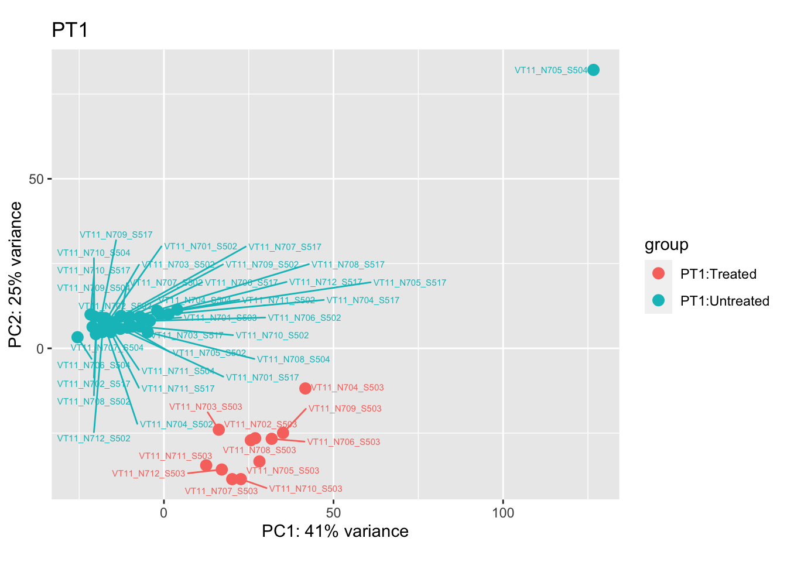
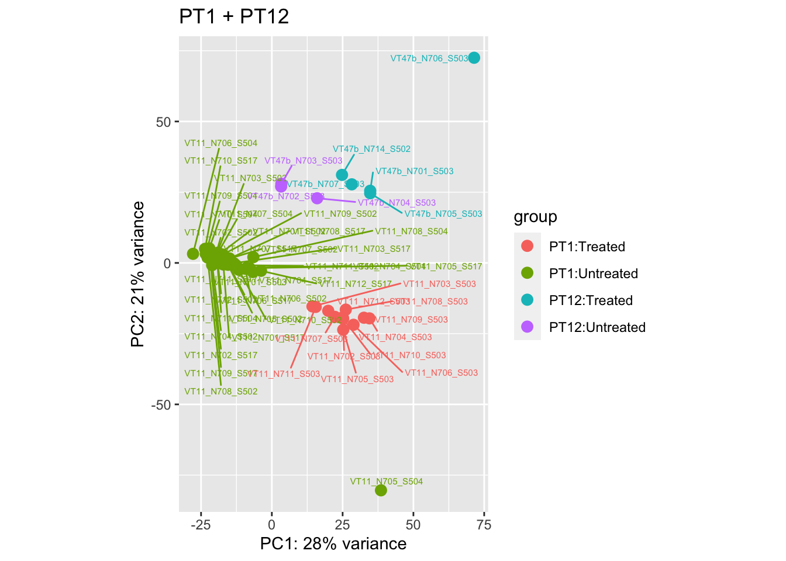
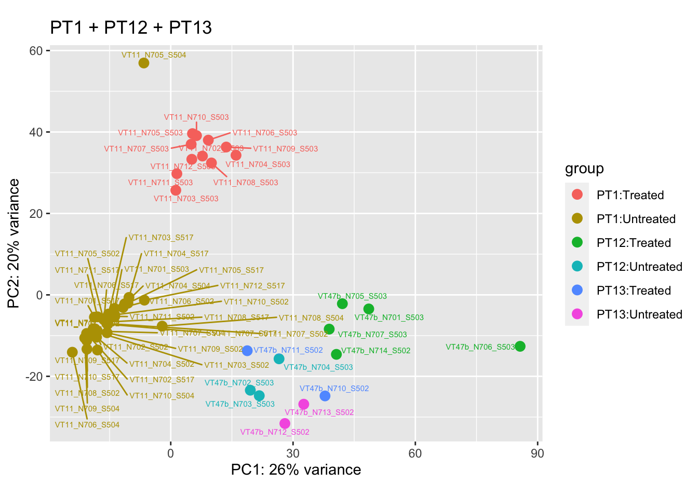
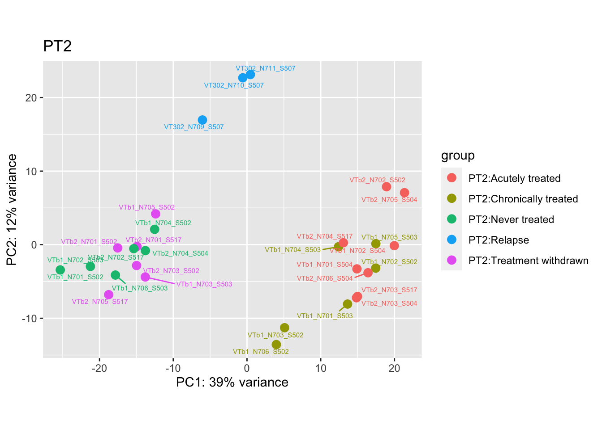
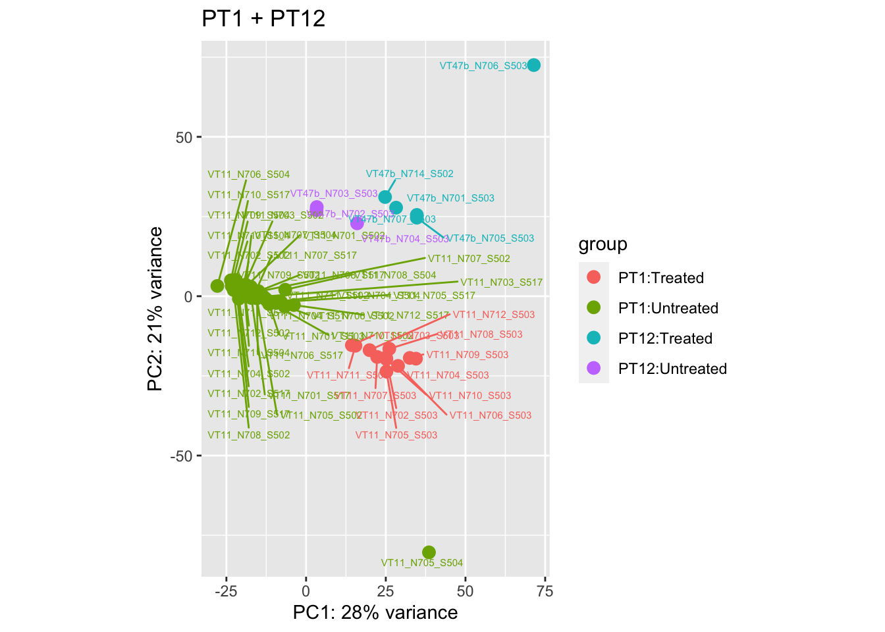
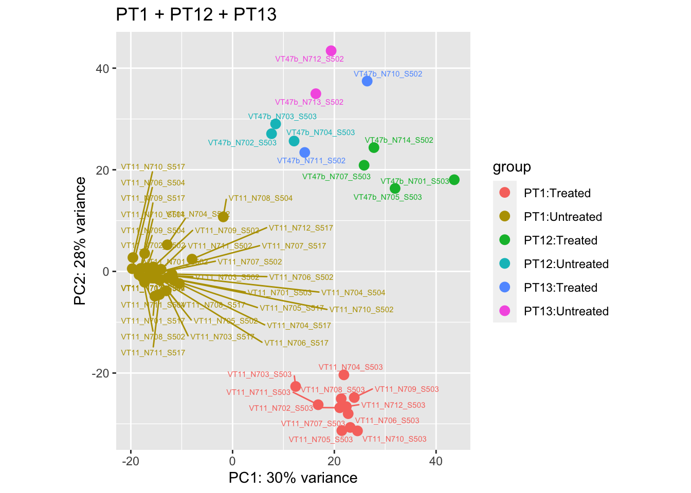

Data - Bulk RNAseq
Last updated: 2021-08-13
Checks: 7 0
Knit directory: Turati_NatCancer_2021/
This reproducible R Markdown analysis was created with workflowr (version 1.6.2). The Checks tab describes the reproducibility checks that were applied when the results were created. The Past versions tab lists the development history.
Great! Since the R Markdown file has been committed to the Git repository, you know the exact version of the code that produced these results.
Great job! The global environment was empty. Objects defined in the global environment can affect the analysis in your R Markdown file in unknown ways. For reproduciblity it’s best to always run the code in an empty environment.
The command set.seed(20210812) was run prior to running the code in the R Markdown file. Setting a seed ensures that any results that rely on randomness, e.g. subsampling or permutations, are reproducible.
Great job! Recording the operating system, R version, and package versions is critical for reproducibility.
Nice! There were no cached chunks for this analysis, so you can be confident that you successfully produced the results during this run.
Great job! Using relative paths to the files within your workflowr project makes it easier to run your code on other machines.
Great! You are using Git for version control. Tracking code development and connecting the code version to the results is critical for reproducibility.
The results in this page were generated with repository version b019b65. See the Past versions tab to see a history of the changes made to the R Markdown and HTML files.
Note that you need to be careful to ensure that all relevant files for the analysis have been committed to Git prior to generating the results (you can use wflow_publish or wflow_git_commit). workflowr only checks the R Markdown file, but you know if there are other scripts or data files that it depends on. Below is the status of the Git repository when the results were generated:
Ignored files:
Ignored: .Rhistory
Ignored: .Rproj.user/
Untracked files:
Untracked: analysis/bulkRNA-pca.Rmd2
Untracked: analysis/data-ancillary.Rmd
Untracked: analysis/data-index2.Rmd
Untracked: data-raw/12885_2017_3103_MOESM1_ESM.xlsx
Untracked: data-raw/41586_2019_1652_MOESM3_ESM.xlsx
Untracked: data-raw/PopSpecificSignatures_250.gmx
Untracked: data-raw/cell_state.gmt
Untracked: data-raw/pre-BI-pre-BII.gmt
Untracked: data-raw/samples_summary.csv
Untracked: data/bulk4_counts.rda
Untracked: data/bulk4_dds.rda
Untracked: data/paper_palette.rda
Untracked: data/signatures.rda
Untracked: docs2/
Untracked: output/figures/
Untracked: output/tables/
Unstaged changes:
Modified: bulkRNA/bulk-deseq2.Rmd
Deleted: bulkRNA/bulk-pca.Rmd
Note that any generated files, e.g. HTML, png, CSS, etc., are not included in this status report because it is ok for generated content to have uncommitted changes.
These are the previous versions of the repository in which changes were made to the R Markdown (analysis/data-bulkRNAseq.Rmd) and HTML (docs/data-bulkRNAseq.html) files. If you’ve configured a remote Git repository (see ?wflow_git_remote), click on the hyperlinks in the table below to view the files as they were in that past version.
| File | Version | Author | Date | Message |
|---|---|---|---|---|
| Rmd | b019b65 | Javier Herrero | 2021-08-13 | Adding data / Bulk RNAseq page |
library(tidyverse)
library(DESeq2)
library(DT)
# knitr::opts_chunk$set(cache = T, autodep = T)This is based on merged_gene_counts.bulk.txt.gz and includes all four patients (PT1, PT2, PT12 and PT13). PT12 and PT13 were added at a later date and the data were re-processed all together from scratch with the NextFlow pipeline described above.
Initial filtering
In this section, we remove:
- genes that are not expressed in almost all samples. More precisely, we remove any gene that does not have at least 1 read count in at least 3 samples.
- samples that do not have at least 20 genes expressed (min read counts > 0)
Then we plot several PCA plots to identify outliers.
merged_gene_counts.bulk <- read.table("data-raw/merged_gene_counts.bulk.txt.gz", row.names = 1, header = T)
colnames(merged_gene_counts.bulk) <- gsub(".", "_", colnames(merged_gene_counts.bulk), fixed = T)
sample_table <- read.csv("data-raw/sample_bulk_rna.csv", stringsAsFactors = F)
# Identify genes that are not expressed in any sample
minExpression <- 1
minSamples <- 3
genes_in_few_samples <- names(which(apply(merged_gene_counts.bulk >= minExpression, 1, sum) >= minSamples))
merged_gene_counts.bulk <- merged_gene_counts.bulk[genes_in_few_samples, ]
# Identify samples that don't have at least 20 genes expressed (very low hanging fruit)
minExpression <- 1
minGenes <- 20
samples_with_few_genes <- names(which(apply(merged_gene_counts.bulk >= minExpression, 2, sum) < minGenes))
samples_to_remove <- c(samples_with_few_genes)
# Filter sample table
sample_table <- sample_table %>% filter(!(title %in% samples_to_remove))
# Filter counts matrix
merged_gene_counts.bulk <- merged_gene_counts.bulk[, sample_table$title]
# Data wrangling, from EGA metadata
sample_table <- sample_table %>%
dplyr::rename(sample = title, patient = subjectId, group = description) %>%
dplyr::select(sample, patient, group) %>%
dplyr::mutate(tissue = case_when(
patient == "PT1" ~ "",
patient == "PT12" ~ "",
patient == "PT13" ~ "",
grepl("mouse bone marrow", group) ~ "BM",
grepl("mouse spleen", group) ~ "Spleen",
grepl("mouse brain", group) ~ "Brain",
TRUE ~ group
)) %>%
dplyr::mutate(group = case_when(
patient %in% c("PT1", "PT12", "PT13") & grepl("untreated", group) ~ "Untreated",
patient %in% c("PT1", "PT12", "PT13") & grepl("treated", group) ~ "Treated",
patient == "PT2" & grepl("untreated control", group) ~ "Never treated",
patient == "PT2" & grepl("acutely treated", group) ~ "Acutely treated",
patient == "PT2" & grepl("treatment withdr", group) ~ "Treatment withdrawn",
patient == "PT2" & grepl("chronically treated", group) ~ "Chronically treated",
patient == "PT2" & grepl("relapse", group) ~ "Relapse",
TRUE ~ group
)) %>%
dplyr::mutate(patient = factor(patient), group = factor(group), tissue = factor(tissue))
bulk_dds <- DESeq2::DESeqDataSetFromMatrix(merged_gene_counts.bulk,
colData = sample_table,
design = ~ group) Note: levels of factors in the design contain characters other than
letters, numbers, '_' and '.'. It is recommended (but not required) to use
only letters, numbers, and delimiters '_' or '.', as these are safe characters
for column names in R. [This is a message, not an warning or error]bulk_vst <- DESeq2::vst(bulk_dds)
pca.pre1 <- DESeq2::plotPCA(bulk_vst[, colData(bulk_vst)$patient == "PT1"], intgroup = c("patient", "group")) +
ggrepel::geom_text_repel(aes(label = name), size = 2) +
ggtitle("PT1")
pca.pre2 <- DESeq2::plotPCA(bulk_vst[, colData(bulk_vst)$patient == "PT2"], intgroup = c("patient", "group")) +
ggrepel::geom_text_repel(aes(label = name), size = 2) +
ggtitle("PT2")
pca.pre3 <- DESeq2::plotPCA(bulk_vst[, colData(bulk_vst)$patient == "PT12"], intgroup = c("patient", "group")) +
ggrepel::geom_text_repel(aes(label = name), size = 2) +
ggtitle("PT12")
pca.pre4 <- DESeq2::plotPCA(bulk_vst[, colData(bulk_vst)$patient == "PT13"], intgroup = c("patient", "group")) +
ggrepel::geom_text_repel(aes(label = name), size = 2) +
ggtitle("PT13")
pca.pre5 <- DESeq2::plotPCA(bulk_vst[, colData(bulk_vst)$patient %in% c("PT1", "PT12")], intgroup = c("patient", "group")) +
ggrepel::geom_text_repel(aes(label = name), size = 2) +
ggtitle("PT1 + PT12")
pca.pre6 <- DESeq2::plotPCA(bulk_vst[, colData(bulk_vst)$patient %in% c("PT1", "PT12", "PT13")], intgroup = c("patient", "group")) +
ggrepel::geom_text_repel(aes(label = name), size = 2) +
ggtitle("PT1 + PT12 + PT13")
pca.pre7 <- DESeq2::plotPCA(bulk_vst, intgroup = c("patient", "group")) +
ggrepel::geom_text_repel(aes(label = name), size = 2) +
ggtitle("All patients")
pca.pre1
pca.pre2pca.pre3
pca.pre4pca.pre5
pca.pre6
pca.pre7
Removing the outliers
List of outliers:
samples_to_remove <- c("VT11_N705_S504", # Outlier in PT1
"VTb2_N706_S517", # Acutely treated clustering with untreated
"VT47b_N706_S503" # Outlier in PT12
)
sample_table %>%
filter(sample %in% samples_to_remove) %>%
datatable(rownames = F, options = list(pageLength = 100, ordering = F, dom = 't'))sample_table <- sample_table %>% filter(!(sample %in% samples_to_remove))
merged_gene_counts.bulk <- merged_gene_counts.bulk[, sample_table$sample]
bulk_dds <- DESeq2::DESeqDataSetFromMatrix(merged_gene_counts.bulk,
colData = sample_table,
design = ~ group) Note: levels of factors in the design contain characters other than
letters, numbers, '_' and '.'. It is recommended (but not required) to use
only letters, numbers, and delimiters '_' or '.', as these are safe characters
for column names in R. [This is a message, not an warning or error]bulk_vst <- DESeq2::vst(bulk_dds)
pca.post1 <- DESeq2::plotPCA(bulk_vst[, colData(bulk_vst)$patient == "PT1"], intgroup = c("patient", "group")) +
ggrepel::geom_text_repel(aes(label = name), size = 2) +
ggtitle("PT1")
pca.post2 <- DESeq2::plotPCA(bulk_vst[, colData(bulk_vst)$patient == "PT2"], intgroup = c("patient", "group")) +
ggrepel::geom_text_repel(aes(label = name), size = 2) +
ggtitle("PT2")
pca.post3 <- DESeq2::plotPCA(bulk_vst[, colData(bulk_vst)$patient == "PT12"], intgroup = c("patient", "group")) +
ggrepel::geom_text_repel(aes(label = name), size = 2) +
ggtitle("PT12")
pca.post4 <- DESeq2::plotPCA(bulk_vst[, colData(bulk_vst)$patient == "PT13"], intgroup = c("patient", "group")) +
ggrepel::geom_text_repel(aes(label = name), size = 2) +
ggtitle("PT13")
pca.post5 <- DESeq2::plotPCA(bulk_vst[, colData(bulk_vst)$patient %in% c("PT1", "PT12")], intgroup = c("patient", "group")) +
ggrepel::geom_text_repel(aes(label = name), size = 2) +
ggtitle("PT1 + PT12")
pca.post6 <- DESeq2::plotPCA(bulk_vst[, colData(bulk_vst)$patient %in% c("PT1", "PT12", "PT13")], intgroup = c("patient", "group")) +
ggrepel::geom_text_repel(aes(label = name), size = 2) +
ggtitle("PT1 + PT12 + PT13")
pca.post7 <- DESeq2::plotPCA(bulk_vst, intgroup = c("patient", "group")) +
ggrepel::geom_text_repel(aes(label = name), size = 2) +
ggtitle("All patients")And here are the PCA plots after and before removing the outliers:
cat("### {.tabset .unlisted .unnumbered .toc-ignore}\n\n")cat("#### Before\n\n")Before
pca.pre1
cat("#### After {.active}\n\n")After
pca.post1
cat("### {.tabset .unlisted .unnumbered .toc-ignore}\n\n")cat("#### Before\n\n")Before
pca.pre2cat("#### After {.active}\n\n")After
pca.post2
cat("### {.tabset .unlisted .unnumbered .toc-ignore}\n\n")cat("#### Before\n\n")Before
pca.pre3
cat("#### After {.active}\n\n")After
pca.post3cat("### {.tabset .unlisted .unnumbered .toc-ignore}\n\n")cat("#### Before\n\n")Before
pca.pre4
cat("#### After {.active}\n\n")After
pca.post4cat("### {.tabset .unlisted .unnumbered .toc-ignore}\n\n")cat("#### Before\n\n")Before
pca.pre5
cat("#### After {.active}\n\n")After
pca.post5
cat("### {.tabset .unlisted .unnumbered .toc-ignore}\n\n")cat("#### Before\n\n")Before
pca.pre6
cat("#### After {.active}\n\n")After
pca.post6
cat("### {.tabset .unlisted .unnumbered .toc-ignore}\n\n")cat("#### Before\n\n")Before
pca.pre7
cat("#### After {.active}\n\n")After
pca.post7
Storing the data
The data objects stored are called: bulk4_counts and bulk4_dds.
# Save this data object
usethis::use_directory("data")✔ Setting active project to '/Users/javier/Projects/Turati_NatCancer_2021'bulk4_counts <- merged_gene_counts.bulk
save(bulk4_counts, file = "data/bulk4_counts.rda")
usethis::use_directory("data")
bulk4_dds <- bulk_dds
save(bulk4_dds, file = "data/bulk4_dds.rda")
sessionInfo()R version 3.6.3 (2020-02-29)
Platform: x86_64-apple-darwin15.6.0 (64-bit)
Running under: macOS Catalina 10.15.7
Matrix products: default
BLAS: /Library/Frameworks/R.framework/Versions/3.6/Resources/lib/libRblas.0.dylib
LAPACK: /Library/Frameworks/R.framework/Versions/3.6/Resources/lib/libRlapack.dylib
locale:
[1] en_GB.UTF-8/en_GB.UTF-8/en_GB.UTF-8/C/en_GB.UTF-8/en_GB.UTF-8
attached base packages:
[1] parallel stats4 stats graphics grDevices utils datasets
[8] methods base
other attached packages:
[1] DT_0.13 DESeq2_1.26.0
[3] SummarizedExperiment_1.16.1 DelayedArray_0.12.3
[5] BiocParallel_1.20.1 matrixStats_0.56.0
[7] Biobase_2.46.0 GenomicRanges_1.38.0
[9] GenomeInfoDb_1.22.0 IRanges_2.20.2
[11] S4Vectors_0.24.4 BiocGenerics_0.32.0
[13] forcats_0.5.0 stringr_1.4.0
[15] dplyr_1.0.0 purrr_0.3.3
[17] readr_1.3.1 tidyr_1.0.2
[19] tibble_2.1.3 ggplot2_3.3.1
[21] tidyverse_1.3.0
loaded via a namespace (and not attached):
[1] colorspace_1.4-1 ellipsis_0.3.0 rprojroot_1.3-2
[4] htmlTable_1.13.3 XVector_0.26.0 base64enc_0.1-3
[7] fs_1.3.2 rstudioapi_0.11 farver_2.0.3
[10] ggrepel_0.8.2 bit64_0.9-7 AnnotationDbi_1.48.0
[13] lubridate_1.7.4 xml2_1.2.5 splines_3.6.3
[16] geneplotter_1.64.0 knitr_1.28 Formula_1.2-3
[19] jsonlite_1.6.1 workflowr_1.6.2 broom_0.5.5
[22] annotate_1.64.0 cluster_2.1.0 dbplyr_1.4.2
[25] png_0.1-7 compiler_3.6.3 httr_1.4.1
[28] backports_1.1.5 assertthat_0.2.1 Matrix_1.2-18
[31] cli_3.0.0 later_1.0.0 acepack_1.4.1
[34] htmltools_0.5.1.1 tools_3.6.3 gtable_0.3.0
[37] glue_1.3.2 GenomeInfoDbData_1.2.2 Rcpp_1.0.4
[40] cellranger_1.1.0 vctrs_0.3.0 nlme_3.1-145
[43] crosstalk_1.1.0.1 xfun_0.16 rvest_0.3.5
[46] lifecycle_0.2.0 XML_3.99-0.3 zlibbioc_1.32.0
[49] scales_1.1.0 clisymbols_1.2.0 hms_0.5.3
[52] promises_1.1.0 RColorBrewer_1.1-2 yaml_2.2.1
[55] memoise_1.1.0 gridExtra_2.3 rpart_4.1-15
[58] latticeExtra_0.6-29 stringi_1.4.6 RSQLite_2.2.0
[61] genefilter_1.68.0 checkmate_2.0.0 rlang_0.4.11
[64] pkgconfig_2.0.3 bitops_1.0-6 evaluate_0.14
[67] lattice_0.20-40 labeling_0.3 htmlwidgets_1.5.1
[70] bit_1.1-15.2 tidyselect_1.1.0 magrittr_1.5
[73] R6_2.4.1 generics_0.0.2 Hmisc_4.3-1
[76] DBI_1.1.0 pillar_1.4.3 haven_2.2.0
[79] whisker_0.4 foreign_0.8-76 withr_2.4.2
[82] survival_3.1-11 RCurl_1.98-1.1 nnet_7.3-13
[85] modelr_0.1.6 crayon_1.3.4 rmarkdown_2.1
[88] usethis_1.5.1 jpeg_0.1-8.1 locfit_1.5-9.1
[91] grid_3.6.3 readxl_1.3.1 data.table_1.12.8
[94] blob_1.2.1 git2r_0.26.1 reprex_0.3.0
[97] digest_0.6.25 xtable_1.8-4 httpuv_1.5.2
[100] munsell_0.5.0